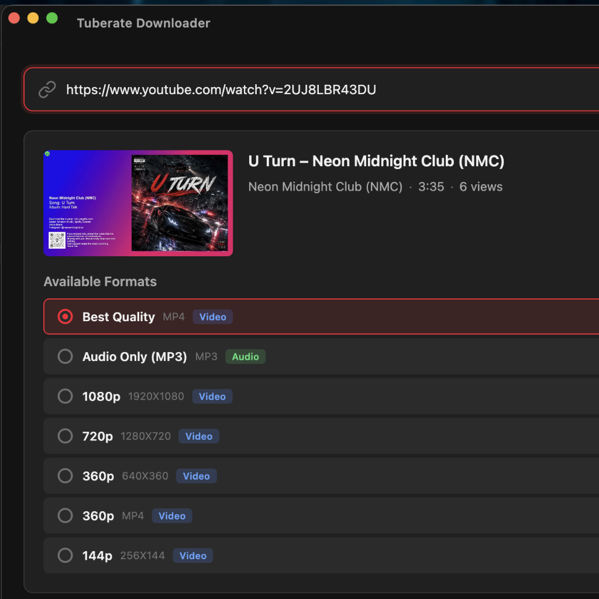

Version 1.0.0 Now Available
The Ultimate Video Downloader
Experience blazing fast, high-quality video and audio downloads directly to your desktop. No ads, no limits, just pure performance.
Available for macOS, Windows, and Linux

Designed for Power Users
Everything you need to manage your offline media library.
Highest Quality Possible
Download up to 4K resolution videos or extract pristine 320kbps MP3 audio directly from any link.
Playlist Support
Analyze and fetch information for entire playlists with a single click. Save time with batch processing.
100% Private & Secure
No tracking, no analytics, no ads. Your data and download history remain entirely on your local machine.
Get Tuberate Today
Start building your offline collection. Choose your platform below.